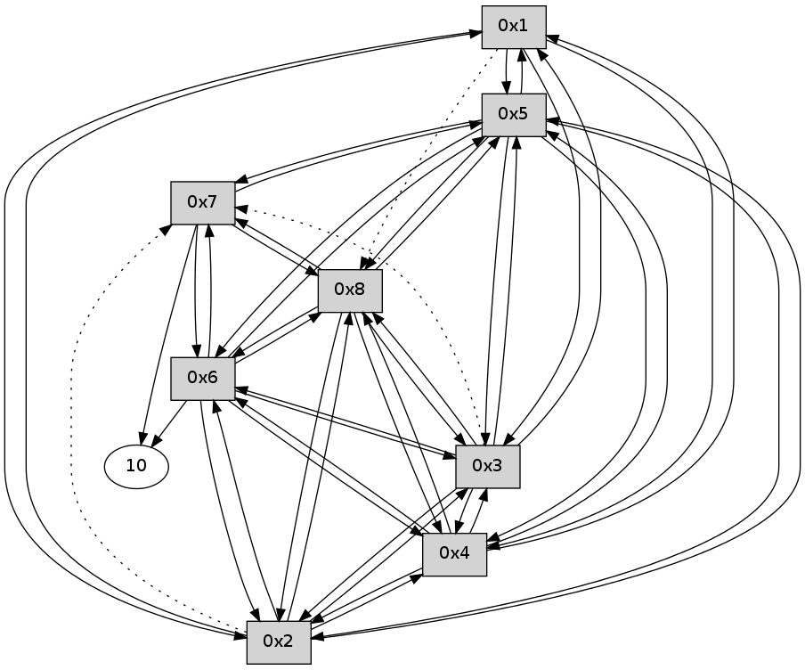

>> << IDX [start] -25 -5 +0 +5 +25 +100 [100.215713978]
 Previous packets
----------------------------------------------------------------------
95.486896 beacon01(11f6) #0 coord=01,02,03,04,05,06,07,08,0a,09 cycle=688.0ms assoc
-- color-indic=0 64 08 a1
95.497076 beacon02(11f6) #0 coord=01,02,03,04,05,06,07,08,0a,09 cycle=688.0ms assoc 64 9b 90
95.507030 beacon03(11f6) #0 coord=01,02,03,04,05,06,07,08,0a,09 cycle=688.0ms assoc 64 e1 dd
95.517030 beacon04(11f6) #0 coord=01,02,03,04,05,06,07,08,0a,09 cycle=688.0ms assoc 64 96 37
95.527031 beacon05(11f6) #0 coord=01,02,03,04,05,06,07,08,0a,09 cycle=688.0ms assoc 64 ec 7a
95.537034 beacon06(11f6) #0 coord=01,02,03,04,05,06,07,08,0a,09 cycle=688.0ms assoc 64 62 ad
95.547032 beacon07(11f6) #0 coord=01,02,03,04,05,06,07,08,0a,09 cycle=688.0ms assoc 64 18 e0
95.557036 beacon08(11f6) #0 coord=01,02,03,04,05,06,07,08,0a,09 cycle=688.0ms assoc 64 9d 71
95.726421 [Hello(1): seq=8 sym=5,3,2,4 asym=8 sysInfo= stat=5:7,0,0,0/3:7,0,0,0/2:5,0,0,0/4:5,0,0,0/8:7,0,0,0]
----------------------------------------------------------------------
96.275031 beacon01(11f6) #0 coord=01,02,03,04,05,06,07,08,0a,09 cycle=688.0ms assoc
-- color-indic=0 64 b4 a4
96.285202 beacon02(11f6) #0 coord=01,02,03,04,05,06,07,08,0a,09 cycle=688.0ms assoc 64 27 95
96.295166 beacon03(11f6) #0 coord=01,02,03,04,05,06,07,08,0a,09 cycle=688.0ms assoc 64 5d d8
96.305166 beacon04(11f6) #0 coord=01,02,03,04,05,06,07,08,0a,09 cycle=688.0ms assoc 64 2a 32
96.315166 beacon05(11f6) #0 coord=01,02,03,04,05,06,07,08,0a,09 cycle=688.0ms assoc 64 50 7f
96.325167 beacon06(11f6) #0 coord=01,02,03,04,05,06,07,08,0a,09 cycle=688.0ms assoc 64 de a8
96.335166 beacon07(11f6) #0 coord=01,02,03,04,05,06,07,08,0a,09 cycle=688.0ms assoc 64 a4 e5
96.345171 beacon08(11f6) #0 coord=01,02,03,04,05,06,07,08,0a,09 cycle=688.0ms assoc 64 21 74
96.380409 [Hello(2): seq=8 sym=1,5,3,8,4,6 asym=7 sysInfo= stat=1:8,0,0,0/5:7,0,0,0/3:7,0,0,0/8:7,0,0,0/4:6,0,0,0/6:4,0,0,0/7:7,0,0,0]
96.416042 [Hello(4): seq=8 sym=1,2,5,6,3,8 sysInfo= stat=1:8,0,0,0/2:7,0,0,0/5:7,0,0,0/6:6,0,0,0/3:7,0,0,0/8:7,0,0,0]
96.455032 [Hello(6): seq=8 sym=10,7,5,3,8,4,2 sysInfo= stat=10:8,0,0,0/7:7,0,0,0/5:7,0,0,0/3:6,0,0,0/8:7,0,0,0/4:7,0,0,0/2:3,0,0,0]
96.461942 [Hello(7): seq=8 sym=10,5,6,8 sysInfo= stat=10:8,0,0,0/5:7,0,0,0/6:8,0,0,0/8:7,0,0,0]
96.474628 [Hello(8): seq=8 sym=2,7,5,6,3,4 sysInfo= stat=2:7,0,0,0/7:7,0,0,0/5:7,0,0,0/6:8,0,0,0/3:6,0,0,0/4:7,0,0,0]
96.508719 [Hello(5): seq=8 sym=1,2,7,6,3,8,4 sysInfo= stat=1:8,0,0,0/2:7,0,0,0/7:8,0,0,0/6:7,0,0,0/3:7,0,0,0/8:8,0,0,0/4:7,0,0,0]
96.515075 [Hello(3): seq=8 sym=1,2,5,6,8,4 asym=7 sysInfo= stat=1:8,0,0,0/2:7,0,0,0/5:8,0,0,0/6:7,0,0,0/8:8,0,0,0/4:8,0,0,0/7:8,0,0,0]
----------------------------------------------------------------------
97.063168 beacon01(11f6) #0 coord=01,02,03,04,05,06,07,08,0a,09 cycle=688.0ms assoc
-- color-indic=0 64 70 aa
97.073336 beacon02(11f6) #0 coord=01,02,03,04,05,06,07,08,0a,09 cycle=688.0ms assoc 64 e3 9b
97.083304 beacon03(11f6) #0 coord=01,02,03,04,05,06,07,08,0a,09 cycle=688.0ms assoc 64 99 d6
97.093303 beacon04(11f6) #0 coord=01,02,03,04,05,06,07,08,0a,09 cycle=688.0ms assoc 64 ee 3c
97.103303 beacon05(11f6) #0 coord=01,02,03,04,05,06,07,08,0a,09 cycle=688.0ms assoc 64 94 71
97.113304 beacon06(11f6) #0 coord=01,02,03,04,05,06,07,08,0a,09 cycle=688.0ms assoc 64 1a a6
97.133310 beacon08(11f6) #0 coord=01,02,03,04,05,06,07,08,0a,09 cycle=688.0ms assoc 64 e5 7a
97.203079 PARSE ERROR************************
Traceback (most recent call last):
File "PacketAnalysis.py", line 167, in showOperaPacket
structPacket = OperaPacketParse.parsePacket(rawPacket)
File "/home/user/HgRep/OCARI-2014/Sniffer-OPERA/OperaPacketParse.py", line 461, in parsePacket
return parseHelloMessage(data)
File "/home/user/HgRep/OCARI-2014/Sniffer-OPERA/OperaPacketParse.py", line 109, in parseHelloMessage
sysInfo,stability,colorInfo = struct.unpack("!HBB", linkList[0:4])
error: unpack requires a string argument of length 4
48 26 01 00 00 09 00 02 02 08 05 00 03 00 02 00 04 00 01 02 08 00 53 04 00 00 00 00 4c 0a 00 08 00 08 00 06 00 06 00 08 53 fa
----------------------------------------------------------------------
97.851305 beacon01(11f6) #0 coord=01,02,03,04,05,06,07,08,0a,09 cycle=688.0ms assoc
-- color-indic=0 64 cc af
97.861458 beacon02(11f6) #0 coord=01,02,03,04,05,06,07,08,0a,09 cycle=688.0ms assoc 64 5f 9e
97.871439 beacon03(11f6) #0 coord=01,02,03,04,05,06,07,08,0a,09 cycle=688.0ms assoc 64 25 d3
97.881439 beacon04(11f6) #0 coord=01,02,03,04,05,06,07,08,0a,09 cycle=688.0ms assoc 64 52 39
97.891441 beacon05(11f6) #0 coord=01,02,03,04,05,06,07,08,0a,09 cycle=688.0ms assoc 64 28 74
97.901442 beacon06(11f6) #0 coord=01,02,03,04,05,06,07,08,0a,09 cycle=688.0ms assoc 64 a6 a3
97.911441 beacon07(11f6) #0 coord=01,02,03,04,05,06,07,08,0a,09 cycle=688.0ms assoc 64 dc ee
97.921444 beacon08(11f6) #0 coord=01,02,03,04,05,06,07,08,0a,09 cycle=688.0ms assoc 64 59 7f
97.961982 [Hello(4): seq=9 sym=1,2,5,6,3,8 sysInfo= stat=1:9,0,0,0/2:7,0,0,0/5:8,0,0,0/6:7,0,0,0/3:8,0,0,0/8:8,0,0,0]
98.007001 [Hello(6): seq=9 sym=10,7,5,3,8,4,2 sysInfo= stat=10:8,0,0,0/7:8,0,0,0/5:7,0,0,0/3:7,0,0,0/8:8,0,0,0/4:8,0,0,0/2:3,0,0,0]
98.069986 [Hello(8): seq=9 sym=2,7,5,6,3,4 sysInfo= stat=2:7,0,0,0/7:7,0,0,0/5:8,0,0,0/6:9,0,0,0/3:7,0,0,0/4:8,0,0,0]
98.074441 [Hello(7): seq=9 sym=10,5,6,8 sysInfo= stat=10:9,0,0,0/5:8,0,0,0/6:9,0,0,0/8:8,0,0,0]
98.081734 [Hello(3): seq=9 sym=1,2,5,6,8,4 asym=7 sysInfo= stat=1:9,0,0,0/2:7,0,0,0/5:8,0,0,0/6:8,0,0,0/8:9,0,0,0/4:9,0,0,0/7:9,0,0,0]
98.093682 [Hello(5): seq=9 sym=1,2,7,6,3,8,4 sysInfo= stat=1:9,0,0,0/2:7,0,0,0/7:9,0,0,0/6:8,0,0,0/3:9,0,0,0/8:9,0,0,0/4:8,0,0,0]
98.096946 [Hello(2): seq=9 sym=1,5,3,8,4,6 asym=7 sysInfo= stat=1:9,0,0,0/5:8,0,0,0/3:9,0,0,0/8:9,0,0,0/4:8,0,0,0/6:6,0,0,0/7:9,0,0,0]
----------------------------------------------------------------------
98.639442 beacon01(11f6) #0 coord=01,02,03,04,05,06,07,08,0a,09 cycle=688.0ms assoc
-- color-indic=0 64 f8 b7
98.649592 beacon02(11f6) #0 coord=01,02,03,04,05,06,07,08,0a,09 cycle=688.0ms assoc 64 6b 86
98.659577 beacon03(11f6) #0 coord=01,02,03,04,05,06,07,08,0a,09 cycle=688.0ms assoc 64 11 cb
98.669578 beacon04(11f6) #0 coord=01,02,03,04,05,06,07,08,0a,09 cycle=688.0ms assoc 64 66 21
98.679579 beacon05(11f6) #0 coord=01,02,03,04,05,06,07,08,0a,09 cycle=688.0ms assoc 64 1c 6c
98.689578 beacon06(11f6) #0 coord=01,02,03,04,05,06,07,08,0a,09 cycle=688.0ms assoc 64 92 bb
98.699580 beacon07(11f6) #0 coord=01,02,03,04,05,06,07,08,0a,09 cycle=688.0ms assoc 64 e8 f6
98.709583 beacon08(11f6) #0 coord=01,02,03,04,05,06,07,08,0a,09 cycle=688.0ms assoc 64 6d 67
98.750295 [Hello(1): seq=10 sym=5,3,2,4 asym=8 sysInfo= stat=5:9,0,0,0/3:9,0,0,0/2:7,0,0,0/4:7,0,0,0/8:9,0,0,0]
----------------------------------------------------------------------
99.427578 beacon01(11f6) #0 coord=01,02,03,04,05,06,07,08,0a,09 cycle=688.0ms assoc
-- color-indic=0 64 44 b2
99.437730 beacon02(11f6) #0 coord=01,02,03,04,05,06,07,08,0a,09 cycle=688.0ms assoc 64 d7 83
99.447713 beacon03(11f6) #0 coord=01,02,03,04,05,06,07,08,0a,09 cycle=688.0ms assoc 64 ad ce
99.457713 beacon04(11f6) #0 coord=01,02,03,04,05,06,07,08,0a,09 cycle=688.0ms assoc 64 da 24
99.467714 beacon05(11f6) #0 coord=01,02,03,04,05,06,07,08,0a,09 cycle=688.0ms assoc 64 a0 69
99.477714 beacon06(11f6) #0 coord=01,02,03,04,05,06,07,08,0a,09 cycle=688.0ms assoc 64 2e be
99.487715 beacon07(11f6) #0 coord=01,02,03,04,05,06,07,08,0a,09 cycle=688.0ms assoc 64 54 f3
99.497718 beacon08(11f6) #0 coord=01,02,03,04,05,06,07,08,0a,09 cycle=688.0ms assoc 64 d1 62
99.533587 [Hello(3): seq=10 sym=1,2,5,6,8,4 asym=7 sysInfo= stat=1:10,0,0,0/2:8,0,0,0/5:9,0,0,0/6:8,0,0,0/8:9,0,0,0/4:9,0,0,0/7:9,0,0,0]
99.546603 [Hello(8): seq=10 sym=2,7,5,6,3,4 sysInfo= stat=2:8,0,0,0/7:8,0,0,0/5:9,0,0,0/6:9,0,0,0/3:9,0,0,0/4:8,0,0,0]
99.577026 [Hello(2): seq=10 sym=1,5,3,8,4,6 asym=7 sysInfo= stat=1:10,0,0,0/5:9,0,0,0/3:10,0,0,0/8:10,0,0,0/4:8,0,0,0/6:6,0,0,0/7:9,0,0,0]
99.581142 [Hello(6): seq=10 sym=10,7,5,3,8,4,2 sysInfo= stat=10:10,0,0,0/7:9,0,0,0/5:8,0,0,0/3:9,0,0,0/8:10,0,0,0/4:8,0,0,0/2:4,0,0,0]
99.593172 [Hello(7): seq=10 sym=10,5,6,8 sysInfo= stat=10:10,0,0,0/5:9,0,0,0/6:10,0,0,0/8:10,0,0,0]
99.614842 [Hello(4): seq=10 sym=1,2,5,6,3,8 sysInfo= stat=1:10,0,0,0/2:9,0,0,0/5:9,0,0,0/6:9,0,0,0/3:10,0,0,0/8:10,0,0,0]
99.625606 [Hello(5): seq=10 sym=1,2,7,6,3,8,4 sysInfo= stat=1:10,0,0,0/2:9,0,0,0/7:10,0,0,0/6:9,0,0,0/3:10,0,0,0/8:10,0,0,0/4:9,0,0,0]